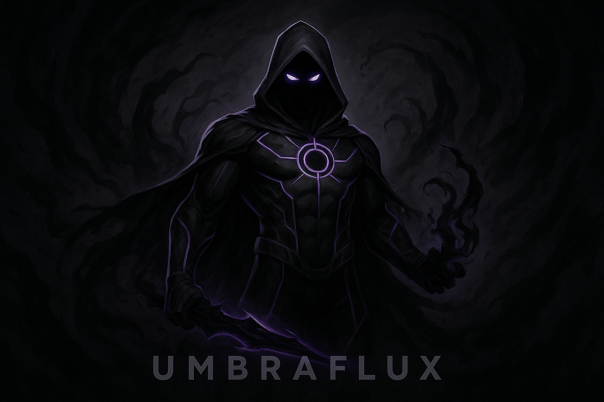

El Dr. Elías Corvin nació en la cima y en el fondo al mismo tiempo. Hijo de un matemático brillante y una artista obsesionada con plasmar “lo que existe entre la luz y la sombra”, creció dividido entre la lógica absoluta y la intuición caótica. Desde niño mostró un talento extraordinario para la física teórica, pero también una inusual fascinación por lo desconocido: aquello que la ciencia aún no podía describir. Su trabajo sobre la materia oscura llamó la atención de instituciones científicas de todo el mundo, aunque también de entidades más discretas y ambiciosas. Recibió una oferta para trabajar en un laboratorio subterráneo sin nombre, financiado por un consorcio internacional cuya única condición era el silencio absoluto. A cambio, le darían recursos ilimitados. Elías aceptó sin dudar. El objetivo del laboratorio era simple en teoría, imposible en práctica: crear un generador cuántico capaz de estabilizar y extraer energía de la materia oscura. Con el tiempo, el proyecto avanzó tanto que se convirtió en un riesgo. El consorcio financiero empezó a presionarlo para realizar una prueba total del generador, aun cuando él sabía que no estaba listo. Finalmente, obligado por contratos y amenazas que no podía ignorar, Elías activó la máquina. Lo que ocurrió no fue una explosión, sino una implosión de luz, un agujero momentáneo en la realidad. El laboratorio entero quedó envuelto en un vacío temporal. Sus colegas desaparecieron sin dejar rastro. Y Elías… Él fue tocado por la sombra cuántica. Despertó horas después, rodeado de ruinas, con una sensación fría recorriendo su cuerpo. Su piel parecía absorber la luz. Su visión captaba emociones como destellos en el aire. Y las sombras… respondían a él. Se movían como si tuvieran vida propia.
Sus principales motivaciones son descubrir qué es la sombra cuántica que habita en él, redimirse por el accidente que destruyó su laboratorio, su vida y la de sus compañeros, proteger a los invisibles y marginados, con quienes se identifica, controlar la energía oscura para no perder su humanidad...
